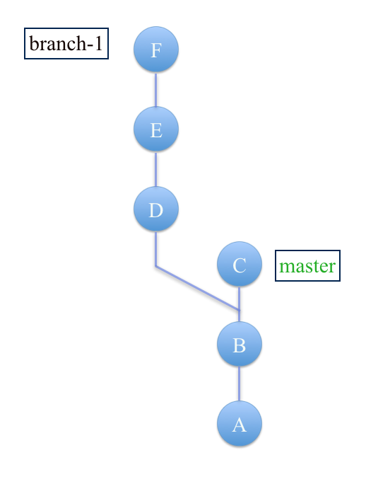

A final lab on the use of Git.
We explore how merging and rebasing may be used to manage Git history. Use of simple examples should provide confidence in using these features to produce a professional-looking project history.
Branch & Merge
Page contents
- Initialize an empty repository.
- Create a series of commits on the master branch.
- Create a secondary branch.
- Populate the secondary branch with a series commits.
- Merge the secondary branch into the master branch.
- Delete the secondary branch.
Action
Start with an empty repository.
If necessary, delete .git:
rm -rf .gitand initialise a new repo:
git initInitialized empty Git repository in ../gitlab/.git/Create, add and commit a file Circle.java.
echo Circle.java > Circle.java
git add .
git commit -m 'A'Modify Circle.java, add and commit with message 'B'.
Repeat with message 'C'.
Check the log. It should be somewhat similar to that shown in Figure 1. Only the commit messages should be exactly the same as the dates and hash values will almost certainly differ.
Now create and checkout a branch at B named branch-1 as shown in Figure 1, ensuring you use the correct hash, not the one in the figure above.
git checkout -b branch-1 9ca1d52Change, add and commit Circle.java repeatedly with commit messages D, E. F. The log should be similar to the in Figure 2.
Your working tree is now as represented in Figure 3.

Now merge branch-1 into master as follows:
git checkout master
git merge branch-1If Circle.java version in branch-1 differs from Circle.java in master then the following message will be generated:
Auto-merging Circle.java
CONFLICT (content): Merge conflict in Circle.java
Automatic merge failed; fix conflicts and then commit the result.Open Circle.java in the vi text editor. It should resemble something like that shown in Figure 5.
Edit Circle.java to resolve the conflicts. Such an exercise has already been dealt with in Git-I lab.
Save the edited Circle.java. This will immediately exit vi.
Run git status and observe a message something like that shown in Figure 6:
Add and commit with, for convenience and consistency, a commit message G. Print the log to verify the merge has completed satisfactorily. See Figure 7.
Your working tree should now be as represented in Figure 8.
Lastly, delete the branch-1 pointer as it's no longer required.
git branch -d branch-1The working tree will now be as depicted in Figure 9.
Examine the commit object whose message is G. This is the tip of the master branch following merging.
git logThe object, with some explanations, is shown here in Figure 10. Note the following describes the situation before merging:
- Commit C is tip of the master branch.
- Commit F is the tip of the branch branch-1.
Following merging, commit G, the tip of the master, has two parents whose abbreviated hash values are shown in Figure 10 and which are depicted in Figure 3.
Branch & Rebase
Page contents
- Initialize an empty repository.
- Create a series of commits on the master branch.
- Create a secondary branch.
- Populate the secondary branch with a series commits.
- Use rebase to merge the secondary branch into the master branch.
- Delete the secondary branch.
Action
- You will create a series of commits as shown in Figure 1.
- You will then create a branch at commit B and make further commits resulting in structure in Figure 2.
- You will rebase the new branch to the tip of the master at commit C as shown in Figure 3.
- The secondary branch pointer, no longer required, will be deleted.

Here are the detailed steps:
Begin with an empty local repository.
Create, stage and commit a file, for example, Circle.java.
Make the commit label 'A'.
Repeat the process for commits B and C (Figure 1).
The log is shown in Figure 4.
- Compare Figure 4 and Figure 1.
Now let's create a branch off commit B as follows:
Create and check out a branch at commit B:
git checkout 1075692 # Checkout at B
git branch branch-1 # Create the branch
git checkout branch-1 # Checkout the branchThe above may be combined into one command as follows:
git checkout -b branch-1 1075692We should receive a reply:
Switched to branch 'branch-1'Now, as with the master branch above, add commits D, E & F making changes to Circle.java for each commit. Study Figure 2 and Figure 5.
Finally, execute the command:
git rebase master # master shown in Figure 1The respose should be similar to that shown in Figure 6. The rebase command has failed because Circle.java as represented in branch-1 differs from that in the master branch and Git is unsure as to which is correct. Therefore manual intervention is required.
Open Circle.java in the vi editor and fix the conflict. See Figure 7.
Fix the conflict in Circle.java as shown in Figure 8 and save the edited file. Then check the status: it should be similar to that in Figure 9.
When the file has been modified and saved, run these commands. The output generated should resemble that shown in Figure 10.
git add .
git rebase --continue
Finally, run these commands to complete the rebase process. Note the final log and observe that goal represented in Figure 3 has been achieved. All the commits, A to F inclusive are now on the master branch. This is the only branch now in existence since branch-1 has been deleted.
git checkout master
git merge branch-1
git branch -d branch-1
Squash Commits
Page contents
- Refactor commit history by compressing a number of commits into a single commit.
- Retain an existing message or provide a new message for this single commit.
- Use the git rebase command for this task.
Action
- Continue working on repo as developed on previous step.
- Recreate branch-1 off commit B as in the earlier steps.
- Checkout branch-1.
- Create a series of commits as shown in Figure 1.
- Combine commits commit 1 to commit 4 into a single commit with message H.
Note down the content of Circle.java. We will need this to verify that the rebasing operation works correctly.
Run the following command to facilitate rebasing of last 4 commits on the branch branch-1:
git rebase -i HEAD~4This results in the opening of a text file in the terminal window as shown in Figure 2. Study its content.
Edit the text file as shown in Figure 3. Note that s denotes squash.
The text file displayed changes to that shown in Figure 4.
Edit the file, deleting all messages except the first message commit 1.
- Save this file. (:wq in vi).
- The terminal output changes to that shown in Figure 5, indicating a successful operation.
Check the log. Opps. We forgot to change the commit message to 'H' as specified. See Figure 6.
This can be achieved as follows:
git commit --amend -m 'H'Now, check the log again: it should be as shown in Figure 7, which is correct. Compare Figure 7 and Figure 1. Verify that Circle.java contains the correct version material (commit 4).
Modify any commit message
Select hash before commit whose message to be changed. For example:
git rebase --i ba0e1Mark message with edit.
Note: Use vi editor.
When process halts modify the message using:
git commit --amend -m 'New message'Complete process with:
git rebase ---continueBranch
To create and checkout a branch named myyamba-client:
git checkout -b myyamba-clientTo track a remote branch:
$ git branch --set-upstream-to=origin/myyamba-client myyamba-client